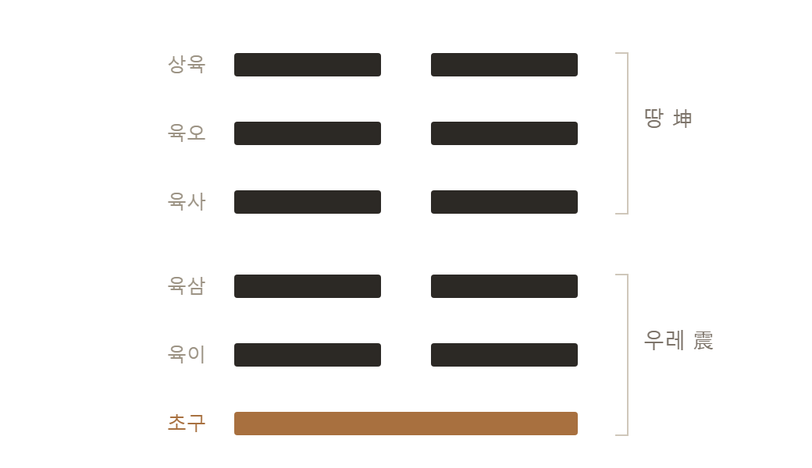

이 글은 비밀번호로 보호되어 있습니다.
심장은 쉬며 뛴다
쉰 살이 되던 해, 나는 문득 활시위가 최대로 당겨진 것 같은 느낌을 받았다. 활을 쏘려면 뒤로 당겨야 한다. 시위를 가슴까지 끌어당기고, 호흡을 멈추고, 겨냥하고, 놓는다. 화살이 날아가는 것은 한순간이지만, 당기는 시간은 길다. 그리고 당기는 시간이 날아가는 거리를 결정한다. 젊은 시절, 보스턴에서 나는 열두 통이 넘는 거절 편지를 연달아 받은 적이 있다. 그때는 인생이 뒤로만 후퇴하는 줄 알았다. 지금은 안다. 그 후퇴가 사실은 활시위가 당겨지던 시간이었다는 것을. 앞으로 나아가는 것만이 전진이 아니라는 것을. 우리 몸이 이 진실을 가장 정직하게 보여 주는 곳이 있다. 바로 심장이다.
경계를 공간에서 보면 막이지만, 시간에서 보면 리듬이다. 경계란 결국 이쪽과 저쪽을 오가는 일이고, 오감은 시간 속에서 리듬이 되기 때문이다. 심장을 보라. 심장은 뛰기만 하지 않는다. 수축하고, 이완한다. 짜내고, 풀어 준다. 나아가고, 물러선다. 만약 심장이 이완을 잊고 수축만 계속한다면—그것이 경직이고, 그것이 죽음이다. 심장은 쉼으로써 뛴다.
더 놀라운 사실이 있다. 건강한 심장은 일정하게 뛰지 않는다. 심장 박동 사이의 간격은 미세하게 늘 변한다. 이것을 심박변이도(HRV)라 부르는데, 이 변이가 클수록 건강하다. 반대로 박동 간격이 기계처럼 똑같아지는 것은 몸이 경직되고 위태롭다는 신호다. 실제로 낮은 심박변이도는 심장질환과 사망 위험을 예고하는 지표로 쓰인다. 죽음에 가까워질수록 심전도는 하나의 직선을 향해 간다. 완벽하게 규칙적인 리듬은 리듬이 아니라 정지다.
고정된 것은 죽은 것이다. 살아 있는 것은 리듬친다.
생리학에는 이 사실을 가리키는 이름이 따로 있다. 오랫동안 우리는 몸이 항상성, 곧 정해진 값을 지키려 애쓴다고 배웠다. 체온은 36.5도, 혈당은 얼마. 그러나 지금은 알로스타시스라는 말을 쓴다. 변화를 통해 안정을 얻는다는 뜻이다. 건강한 몸은 값을 고정하는 몸이 아니라 상황에 따라 값을 옮길 줄 아는 몸이다. 달릴 때는 심장을 올리고 잘 때는 내린다. 그 폭이 넓을수록 건강하다. 고정하려는 몸이 아니라 옮길 줄 아는 몸. 이것이 이 책이 리듬이라 부르는 것의 학술적인 이름이다.
이 리듬을 지휘하는 것이 미주신경(vagus nerve)이다. 미주신경은 몸의 브레이크다. 흥분한 몸을 가라앉히고, 심장을 늦추고, 소화와 회복을 켠다. 나아가기만 하던 몸을 물러서게 하는 신경이다. 신경과학자 스티븐 포지스의 이론에 따르면, 이 미주신경은 우리가 안전하다고 느끼고 누군가와 따뜻하게 연결될 때 가장 잘 작동한다. 심리학자 바버라 프레드릭슨의 연구는 여기서 놀라운 선순환을 발견했다. 따뜻한 관계는 미주신경의 힘을 키우고, 튼튼해진 미주신경은 다시 더 깊은 관계를 가능하게 한다. 물러섬의 능력은 홀로 만들어지지 않는다는 뜻이다. 나를 받쳐 주는 누군가가 있을 때 비로소 우리는 긴장을 풀 수 있다. 리듬의 회복은 관계의 회복과 맞닿아 있다.
나는 오래전부터 건강이란 나아감과 물러섬의 리듬이라고 생각해 왔다. 그런데 이 생각이 나만의 것이 아니었음을 뒤늦게 알았다. 역사가 아널드 토인비는 큰일을 이루는 사람도, 문명도 똑같은 리듬으로 자란다고 보았고, 그것을 물러남과 복귀라 불렀다. 큰 것을 이루는 사람은 세상 한복판에서 곧장 이기지 않는다. 일단 물러나—광야로, 고독으로—안에서 바뀐 뒤, 새 힘으로 돌아와 세상을 바꾼다. 심리학자 융이 개성화라 부른 내면의 여정도 다르지 않다.
여기서 나를 오래 붙든 것은 그가 이 리듬에 붙인 이름이었다. 토인비는 문명의 성장을 설명하면서 중국철학의 음양을 그대로 가져다 썼다. 陰은 쉼이고 물이며, 陽은 활동이고 불이다. 그리고 그는 문명의 발생을 우주를 관통하는 리드미컬한 맥동의 한 박자라고 불렀다. 20세기 영국의 역사학자가 인류 문명 전체를 설명할 언어를 찾다가, 결국 주나라 사람들이 쓰던 두 글자에 도달한 것이다.
서로를 몰랐던 사람들이 같은 자리에 도착했다.
덧붙여 둘 것이 있다. 도전과 응전이라는 개념은 토인비의 것이다. 다만 나는 오래전 캐나다에서 청년들을 가르치며, 그의 통찰을 한 문장으로 벼려 역사를 도전과 응전의 다이내믹이라 불러 왔다. 그 명사형은 그의 원문에서 찾지 못했으니 내 말로 남겨 둔다. 개념은 그의 것이고, 그것을 그렇게 불러 온 것은 나다.
같은 자리에 도착한 사람이 또 있다. 『주역』은 이 리듬을 성숙의 정의로 삼는다. 순수한 상승과 창조를 뜻하는 건괘의 마지막 자리에 항룡유회, 곧 끝까지 올라간 용에게는 후회가 있다는 말이 붙어 있다. 그 풀이가 이렇다. 나아감을 알되 물러남을 모르고, 존속을 알되 소멸을 모른다. 그것이 끝까지 오른 자의 병이다. 그리고 이어서 말한다. 나아감과 물러남, 존속과 소멸을 다 알면서도 그 바름을 잃지 않는 자, 오직 그런 사람이 성인이다.
성숙이 무엇이냐고 물으면 나는 이제 이렇게 답한다. 더 많이 나아갈 줄 아는 것이 아니라, 언제 나아가고 언제 물러설지를 아는 것이다. 주역은 그것을 때에 맞음이라 불렀다. 같은 행동도 때에 맞으면 길하고 때에 어긋나면 흉하다. 나아감이 언제나 옳은 것도, 물러섬이 언제나 옳은 것도 아니다.
앞에서 나는 물러난다는 말을 광야라고 썼다. 그 광야에 이름을 하나 붙이고 싶다. 이집트 왕자였던 모세는 마흔에 사람을 죽이고 광야로 달아나, 자기 양도 아닌 장인의 양을 치며 다시 마흔 해를 보냈다. 그 광야에서 첫아들을 낳고 이름을 게르솜이라 지었다. 내가 타국에서 나그네가 되었다는 뜻이다. 그리고 둘째를 낳고 엘리에셀이라 지었다. 나를 건져 내셨다는 뜻이다. 상황은 하나도 바뀌지 않았다. 여전히 광야였고 여전히 남의 양을 치고 있었다. 그런데 같은 마흔 해에 두 개의 이름이 붙었다.
순서가 중요하다. 게르솜이 먼저였다. 나그네라는 정직한 이름을 먼저 붙인 사람만이 나중에 다른 이름에 도달한다. 처음부터 괜찮다고 말하는 것은 재해석이 아니라 회피이고, 그것이 1장에서 말한 우쭈쭈다. 걸림돌을 걸림돌이라 부르지 않은 사람에게 그것이 디딤돌이 되는 일은 일어나지 않는다.
이 장을 닫으며 하나만 더 적는다. 물러섬을 견디는 사람에게 우리는 너무 쉽게 더 자라라고 말한다. 그러나 감당할 수 없는 도전 앞에서 그 말은 잔인하다. 나아감이 양의 성공이라면 물러섬에도 그 나름의 성공이 있다. 겨울을 난 나무는 실패한 것이 아니다. 잎을 다 떨구고 앙상하게 서서 봄을 기다린 그 겨울은 나무의 실패가 아니라 지혜였다.
그 겨울에 주역이 붙인 이름이 복(復)이다. 괘의 모양이 곧 뜻이다. 위로 다섯 개의 음이 어둡게 눌러앉아 있고, 맨 아래에서 하나의 양이 막 돋는다. 위는 땅이고 아래는 우레이니, 언 땅 밑에서 봄의 첫 진동이 시작되는 자리다. 주역은 이 자리를 두고 되돌아옴에서 천지의 마음을 본다고 했다. 천지의 마음이 절정에 있지 않고 바닥에 있다는 말이다.

양이 하나뿐이라는 점이 중요하다. 다섯이 아니라 하나다. 그러니 이 자리에 서 있는 사람에게 회복의 증거를 요구해서는 안 된다. 겉으로는 아직 아무것도 달라 보이지 않는다. 다만 방향이 바뀌었을 뿐이다. 주역은 그 하나에 칠일래복, 이레면 되돌아온다는 말을 붙였다. 되돌아옴이 애써 얻어 내는 성과가 아니라 리듬의 성질이라는 뜻이다.
때로는 성장이 성공이고, 때로는 살아남는 것 자체가 성공이다.
주역은 되돌아옴을 한 덩어리로 말하지 않았다. 여섯 자리로 나누어 놓았다. 돌아온다는 한 가지 일에도 저마다 다른 얼굴이 있기 때문이다. 맨 아래 초구는 불원복, 멀리 가기 전에 얼른 돌아오는 것이다. 크게 길하다고 했다. 그 위 육이는 휴복, 먼저 돌아온 사람에게 기대어 함께 돌아오는 것이다. 육삼은 빈복, 자주 넘어지고 자주 돌아오는 것이다. 위태롭다고 하면서도 허물은 없다고 했다. 넘어진 횟수를 센 것이 아니라 돌아온 횟수를 센 것이다. 육사는 독복, 다섯 음의 한가운데 있으면서 홀로 돌아오는 것이다. 함께 가던 무리에서 혼자 방향을 트는 자리다. 육오는 돈복, 두텁고 묵직하게 돌아오는 것이다.
그리고 맨 위 상육이 미복이다. 돌아올 때를 놓친 것이다. 여섯 자리 가운데 유일하게 흉하다는 말이 붙었고, 그 뒤로 경고가 길게 이어진다. 재앙이 있고, 이 상태로 군사를 일으키면 끝내 크게 패하며, 그 여파가 임금에게까지 미쳐 십 년이 지나도록 다시 일어서지 못한다고 했다. 주역이 한 자리를 두고 이렇게까지 길게 말한 경우는 드물다. 여기서 흉한 것은 물러선 일이 아니었다. 물러설 때를 놓친 일이었다.
여섯 가운데 아름답다는 말을 받은 자리가 휴복이라는 사실은 오래 마음에 남는다. 쉴 휴(休) 자가 되돌아옴의 한복판에 들어와 있다. 게다가 그 풀이는 아름다움의 이유를 아래에 있는 어진 이에게 자기를 낮추었기 때문이라고 했다. 홀로 돌아오는 것보다 기대어 돌아오는 것을 더 높이 쳤다는 뜻이다. 이 글자는 뒤에서 다시 만난다.
부풀기만 하던 삶의 병에 이제 이름이 하나 더 붙는다. 미복이다. 나아가기만 하고 물러설 줄 모르는 삶, 수축만 하고 이완하지 못하는 심장이다. 그 리듬은 하나의 직선을 향해 굳어 간다. 그를 살리는 길은 더 세게 뛰게 하는 것이 아니라, 쉬며 뛰는 법을 되찾게 하는 것이다. 그리고 그 쉼의 비밀을, 다음 장에서 우리는 숨 한 번에서 찾는다.
이 장의 참고
알로스타시스 — Sterling & Eyer(1988), McEwen(1998) NEJM 338(3):171–179 · 스티븐 포지스, 다미주신경 이론(2011) · Kok 외(2013), Psychological Science 24(7):1123–1132 — 따뜻한 관계와 미주신경 긴장도의 상승 나선 · 아널드 토인비, 『역사의 연구』 — 음양 리듬 제1권 201쪽, 우주적 맥동 제1권 205쪽 · 『주역』 건괘 「문언전」, 복괘(地雷復) 괘사·「단전」(復其見天地之心)·육효 효사(不遠復·休復·頻復·獨復·敦復·迷復)와 육이 「상전」(以下仁也) · 출애굽기 2:22, 18:3–4